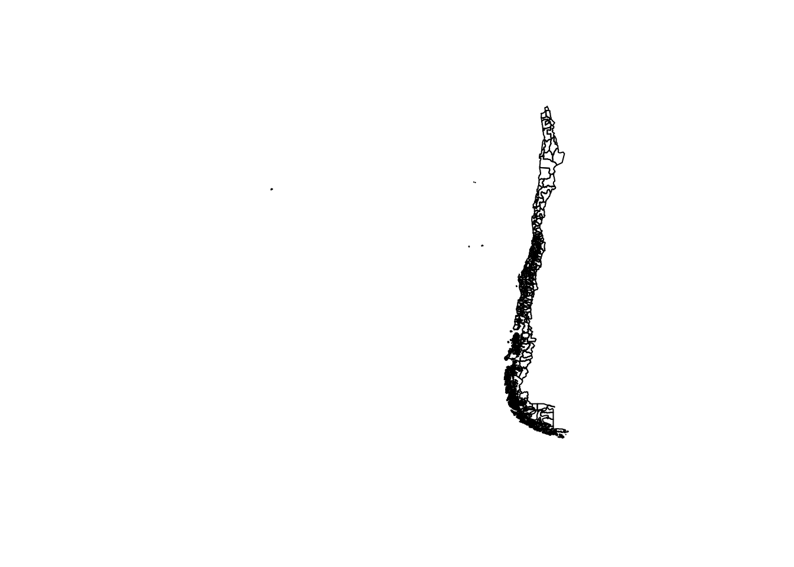

# data wrangling
library(tidyverse)
#library(fs)
#library(here)
# spatial data wrangling
library(sf)
library(mapdeck)
# data visualisation
library(viridis)
#library(viridisLite)
library(ggthemes)
library(patchwork)
library(showtext)
library(gganimate)
#library(gifski)
#library(ggnewscale)Spatial patterns
Aims
Dependencies
Data
Read and describe Meta-Facebook mobility data
df20 <- readRDS("./data/fb/movement_adm/2020_04.rds") %>%
dplyr::filter(country == "CL")
str(df20)spc_tbl_ [29,491 × 20] (S3: spec_tbl_df/tbl_df/tbl/data.frame)
$ GEOMETRY : chr [1:29491] "LINESTRING (-69.96872527689874 -23.401130458751577, -69.64386372626582 -22.18049545774072)" "LINESTRING (-71.74072265625 -34.025285704448066, -71.49902343750001 -33.94332872030442)" "LINESTRING (-69.33584623247664 -23.384935392069348, -68.9607367114486 -22.551323233330702)" "LINESTRING (-71.72717786815069 -34.45899487647619, -71.49360552226027 -34.560277664097924)" ...
$ date_time : chr [1:29491] "2020-04-01 00:00" "2020-04-01 00:00" "2020-04-01 00:00" "2020-04-01 00:00" ...
$ start_polygon_id : chr [1:29491] "60845" "60862" "60845" "60862" ...
$ start_polygon_name : chr [1:29491] "Antofagasta" "Cardenal Caro" "Antofagasta" "Cardenal Caro" ...
$ end_polygon_id : chr [1:29491] "60847" "60890" "60846" "60863" ...
$ end_polygon_name : chr [1:29491] "Tocopilla" "Melipilla" "El Loa" "Colchagua" ...
$ length_km : num [1:29491] 139.8 24.1 100.3 24.2 115.5 ...
$ tile_size : num [1:29491] 11 11 11 11 11 11 11 11 11 11 ...
$ country : chr [1:29491] "CL" "CL" "CL" "CL" ...
$ level : chr [1:29491] "LEVEL3" "LEVEL3" "LEVEL3" "LEVEL3" ...
$ n_crisis : num [1:29491] 79 18 320 71 NA 369 NA 20 11 NA ...
$ n_baseline : num [1:29491] 59.5 25.5 671 132.8 NA ...
$ n_difference : num [1:29491] 19.5 -7.5 -351 -61.8 NA ...
$ percent_change : num [1:29491] 32.2 -28.3 -52.2 -46.2 166.7 ...
$ is_statistically_significant: num [1:29491] 0 0 0 0 0 0 0 0 0 0 ...
$ z_score : num [1:29491] 2.015 -0.684 -4 -1.261 1.5 ...
$ start_lat : num [1:29491] -24.3 -34.3 -24.3 -34.3 -32.6 ...
$ start_lon : num [1:29491] -69.6 -71.8 -69.6 -71.8 -70.7 ...
$ end_lat : num [1:29491] -22.1 -33.8 -22.8 -34.7 -33.7 ...
$ end_lon : num [1:29491] -69.6 -71.2 -68.2 -71.1 -70.9 ...
- attr(*, "spec")=
.. cols(
.. GEOMETRY = col_character(),
.. date_time = col_character(),
.. start_polygon_id = col_character(),
.. start_polygon_name = col_character(),
.. end_polygon_id = col_character(),
.. end_polygon_name = col_character(),
.. length_km = col_double(),
.. tile_size = col_double(),
.. country = col_character(),
.. level = col_character(),
.. n_crisis = col_double(),
.. n_baseline = col_double(),
.. n_difference = col_double(),
.. percent_change = col_double(),
.. is_statistically_significant = col_double(),
.. z_score = col_double(),
.. start_lat = col_double(),
.. start_lon = col_double(),
.. end_lat = col_double(),
.. end_lon = col_double()
.. )
- attr(*, "problems")=<externalptr> unique_origins <- unique(df20$start_polygon_name)
unique_destinations <- unique(df20$end_polygon_name)Bing tiles
Read and describe Bing tile grids and how they can be created - reference to our work.
#bing_grid <- read_sf()Administrative areas
Read and describe administrative areas. Explain spatial data frames: geometry, projection, etc.
shp <- read_sf("./data/shp/gadm41_CHL_3.shp") %>%
st_simplify(preserveTopology =T,
dTolerance = 1000) %>% # 1km
sf::st_make_valid() %>%
dplyr::select( -c(
NL_NAME_1, NL_NAME_2, VARNAME_3, NL_NAME_3, CC_3, HASC_3
) )
shpSimple feature collection with 345 features and 10 fields (with 1 geometry empty)
Geometry type: GEOMETRY
Dimension: XY
Bounding box: xmin: -109.4488 ymin: -55.97871 xmax: -66.41821 ymax: -17.49952
Geodetic CRS: WGS 84
# A tibble: 345 × 11
GID_3 GID_0 COUNTRY GID_1 NAME_1 GID_2 NAME_2 NAME_3 TYPE_3 ENGTYPE_3
<chr> <chr> <chr> <chr> <chr> <chr> <chr> <chr> <chr> <chr>
1 CHL.2.1.1_1 CHL Chile CHL.2_1 Antof… CHL.… Antof… Antof… Comuna Municipa…
2 CHL.2.1.2_1 CHL Chile CHL.2_1 Antof… CHL.… Antof… Mejil… Comuna Municipa…
3 CHL.2.1.3_1 CHL Chile CHL.2_1 Antof… CHL.… Antof… Sierr… Comuna Municipa…
4 CHL.2.1.4_1 CHL Chile CHL.2_1 Antof… CHL.… Antof… Taltal Comuna Municipa…
5 CHL.2.2.1_1 CHL Chile CHL.2_1 Antof… CHL.… El Loa Calama Comuna Municipa…
6 CHL.2.2.2_1 CHL Chile CHL.2_1 Antof… CHL.… El Loa Ollag… Comuna Municipa…
7 CHL.2.2.3_1 CHL Chile CHL.2_1 Antof… CHL.… El Loa San P… Comuna Municipa…
8 CHL.2.3.1_1 CHL Chile CHL.2_1 Antof… CHL.… Tocop… María… Comuna Municipa…
9 CHL.2.3.2_1 CHL Chile CHL.2_1 Antof… CHL.… Tocop… Tocop… Comuna Municipa…
10 CHL.3.1.1_1 CHL Chile CHL.3_1 Arauc… CHL.… Cautín Carah… Comuna Municipa…
# ℹ 335 more rows
# ℹ 1 more variable: geometry <POLYGON [°]>plot(shp$geometry)
Spatial indicators of human mobility
Origin-based indicators
This measure is in relation to a baseline - percentage change and flow
origin_df <- df20 %>%
group_by(start_polygon_name) %>%
dplyr::summarise(
mean_perchange = mean(percent_change, na.rm = T),
mean_flows = mean(n_difference, na.rm = T),
mean_outflow = mean(n_crisis, na.rm = T),
sum_flows = sum(n_difference, na.rm = T),
sum_outflow = sum(n_crisis, na.rm = T)
) %>%
ungroup()
tail(origin_df, 10)# A tibble: 10 × 6
start_polygon_name mean_perchange mean_flows mean_outflow sum_flows
<chr> <dbl> <dbl> <dbl> <dbl>
1 Santiago -67.6 914. 30810. 1593286.
2 Talagante -27.3 368. 3294. 212183.
3 Talca -47.2 111. 5641. 62325.
4 Tamarugal 15.1 -275. 1380. -62324.
5 Tierra del Fuego -22.9 11.6 832. 1109.
6 Tocopilla 119. 40.0 368. 10228.
7 Valdivia -63.9 -883. 6014. -325912.
8 Valparaíso -57.6 -453. 11183. -374287.
9 Ñuble -54.1 -164. 7629. -70690.
10 Última Esperanza -14.8 -162. 705. -14771.
# ℹ 1 more variable: sum_outflow <dbl>Destination-based indicators
destination_df <- df20 %>%
group_by(end_polygon_name) %>%
dplyr::summarise(
mean_perchange = mean(percent_change, na.rm = T),
mean_flows = mean(n_difference, na.rm = T),
mean_outflow = mean(n_crisis, na.rm = T),
sum_flows = sum(n_difference, na.rm = T),
sum_outflow = sum(n_crisis, na.rm = T)
) %>%
ungroup()
tail(destination_df, 10)# A tibble: 10 × 6
end_polygon_name mean_perchange mean_flows mean_outflow sum_flows sum_outflow
<chr> <dbl> <dbl> <dbl> <dbl> <dbl>
1 Santiago -69.0 943. 32307. 1566780. 53693876
2 Talagante -24.2 371. 3324. 211701. 1897958
3 Talca -46.7 115. 5682. 64266. 3170655
4 Tamarugal 18.8 -261. 1314. -62423. 313993
5 Tierra del Fuego -21.7 11.5 823. 1116. 79867
6 Tocopilla 53.1 39.3 345. 10766. 94540
7 Valdivia -60.6 -887. 6079. -323796. 2218811
8 Valparaíso -61.3 -446. 11374. -362437. 9235667
9 Ñuble -54.5 -158. 7229. -72077. 3296434
10 Última Esperanza -17.7 -164. 712. -14750. 64118Netflows
Mapping
Choropleths
Interactive mapping
Flow mapping
Common concepts
There are several concepts relevant to understanding the data sets. First of all, we construct maps using two different methods of identifying locations: tiles and administrative polygons.
The Bing Maps Tile System defines a series of grids at different resolution levels over a rectangular projection of the world (Schwartz 2018). Each level is constructed by dividing the previous level into fourths. We typically use Bing tile levels 13 through 16, where level 13 results in tiles that are about 4.9 x 4.9 km at the Equator. The other method we use for identifying a location is administrative polygons, which define the political and geographic boundaries of countries, states, provinces, counties, cities, and more.
When generating a map for a crisis event, we specify a rectangular bounding box around the most directly affected area. The different map calculations, described in the following sections, are done relative to this region, and, for most of the maps, only data within this region is included. Most of the map types are based on counting events that occur within a time interval, which is frequently 8 or 24 hours. The time interval determines what data is included in a calculation as well as the minimum frequency with which new maps are generated.